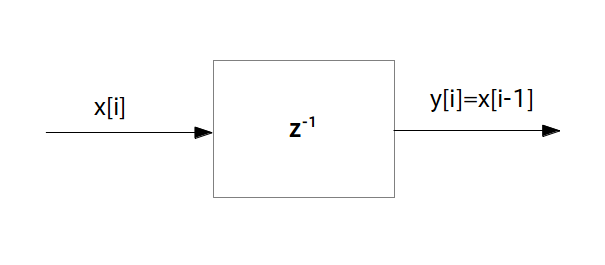

ブロック図:

プログラム表現:
y[i] = a * x[i-1]
フィルタの合成方法とフィードバック機構を学びましたので、これでようやく目的であった「伝達関数→ブロック図→プログラム表現」の変換ができるようにになりました。
基本的なやり方は、伝達関数を直列結合・並列結合・フィードバック機構の 3 構造に分け、さらにそれぞれを乗算器、遅延素子を使って描き直すことです。これをやるのは結構慣れが必要なので、このページでは簡単な変換例をいくつか紹介したいと思います。
$\textrm{H}_1(z) = a$ で $\textrm{H}_2(z) = b$ なら
\begin{align*} \textrm{H}(z) = a \cdot b \end{align*}なので結局乗算器 1 つだけのブロック図に変わります。この時のブロック図とプログラム表現は次のようになります。
ブロック図:
プログラム表現:
y[i] = a * b * x[i]
$\textrm{H}_1(z) = z^{-1}$ で $\textrm{H}_2(z) = a$ なら
\begin{align*} \textrm{H}(z) = z^{-1} \cdot a \end{align*}となりますが、伝達関数は
\begin{align*} \textrm{H}(z) = a \cdot z^{-1} \end{align*}と実数 $a$ の方を $z^{-1}$ より左に書き方が一般的です。
ブロック図:
プログラム表現:
y[i] = a * x[i-1]
$\textrm{H}_1(z) = z^{-1}$ で $\textrm{H}_2(z) = z^{-1}$ なら
\begin{align*} \textrm{H}(z) = z^{-1} \cdot z^{-1} \end{align*}となりますが、これを $z$ の項でまとめると伝達関数は
\begin{align*} \textrm{H}(z) = z^{-2} \end{align*}となります。この伝達関数を持つフィルタを「2時刻遅延素子」と呼び、入力が 2 時刻遅れて出てくるフィルタになります。
ブロック図:
プログラム表現:
y[i] = x[i-2]
同様に遅延素子を $k$ 個直列結合することで「$k$ 時刻遅延素子」を作ることが出来ます。
ブロック図:
プログラム表現:
y[i] = x[i-k]